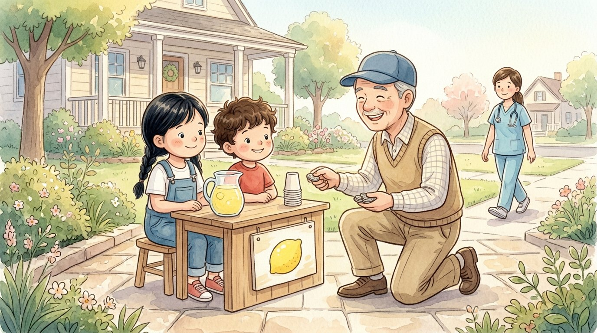

Grade 1 · Social studies · SS.1.EC.FL.3
The lemonade stand
A story about work and the money people earn for it.
Three new words
What a person does to help or to earn money.
To get money for something you did.
The money you get for your work.
Tap a picture to hear the word and what it means.
The story
Lucía and Israel set up a lemonade stand in front of the house.
They squeezed lemons, mixed in water and sugar, and made a sign.
It was a lot of work!
A neighbor bought a cup and paid them fifty cents.
“We worked, so we earned money!” said Israel.
In the evening, Lucía’s mom came home from the hospital, where she is a nurse.
“Mom, do you get paid too?” Lucía asked.
“Yes. I take care of sick people, and the hospital gives me pay,” her mom said.
“With that money we buy food and pay for our home.”
Israel’s dad is a mechanic: he fixes cars, and he gets paid for his work.
Lucía and Israel kept their coins in a jar.
People work, and in exchange they get money.
Questions
Listen to the question and tap the right picture.
-
Question A. Why did Lucía and Israel earn money?
They worked, so they earned money.
-
Question B. What does Lucía’s mom do at her job?
She is a nurse: she takes care of sick people and gets paid.
-
Question C. What does the family use the pay for?
With the pay they buy food and pay for their home.